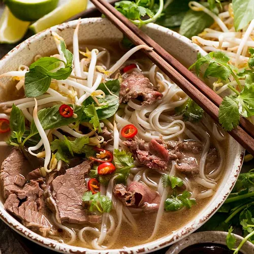
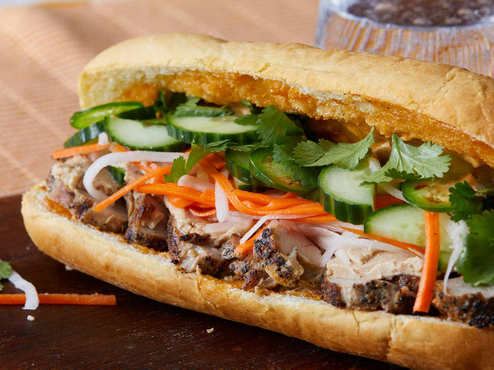
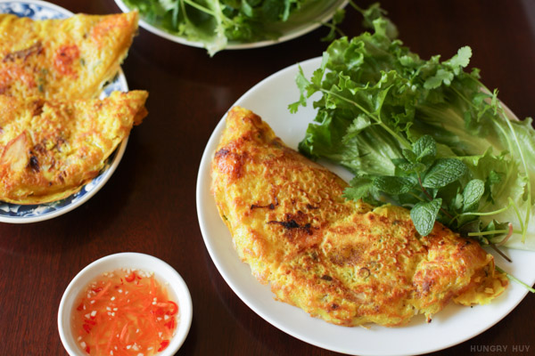
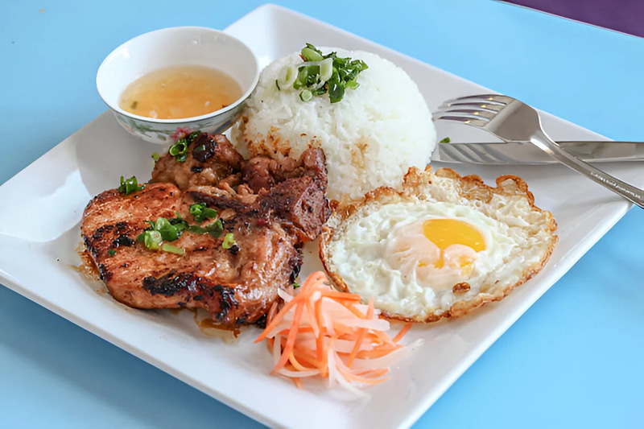
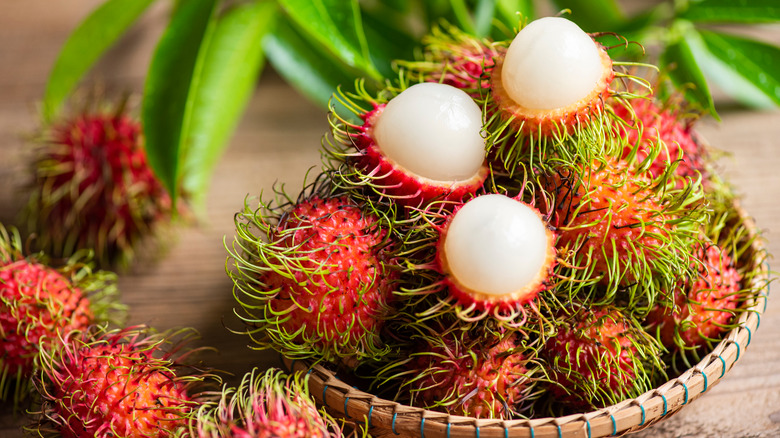
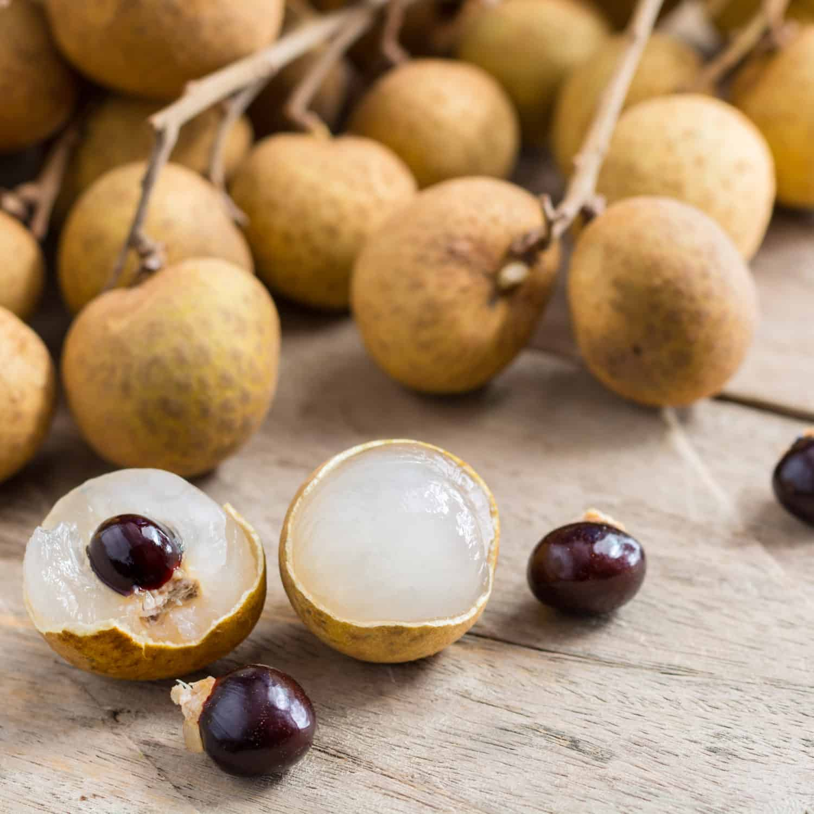
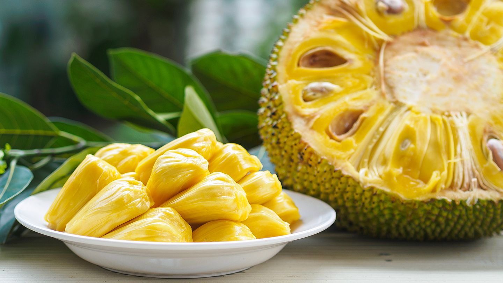
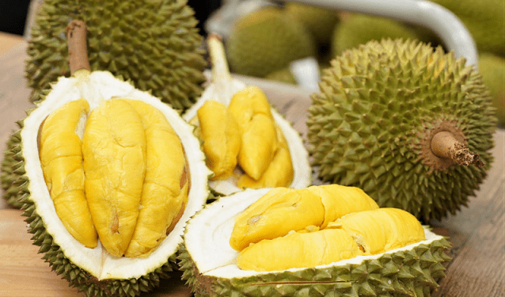

FOOD
Vietnamese cuisine is so delicious because many dishes have an emphasis on fresh ingredients, combinations of sweet, sour, bitter, and spicy, as well as fresh herbs and vegetables that provide a great balance with the rest of the dish. Let’s explore some popular dishes!
PHO (PHỞ)

Pho is probably the most well-known Vietnamese dish, a bowl of noodles with a flavorful broth! Top off your bowl with fresh herbs like Thai basil and beansprouts, and sauces like hoisin and sriracha. Don’t forget the lime!
BANH MI (BÁNH MÌ)

This delicious Vietnamese sandwich is made up of a warm baguette and filled with delicious meat, pâté spread, pickled daikon/carrots, and fresh herbs! Be careful, it can get messy with all of the crumbs!
BANH XEO (BÁNH XÈO)

Banh Xeo is a crispy crepe made from a savory turmeric batter, it’s filled with meat like pork or shrimp, bean sprouts, and served with lettuce and fresh herbs! You can’t forget about the most important thing, a sweet and spicy dipping sauce called “nước mắm” or “nước chấm”.
COM TAM (CƠM TẤM)

Com Tam translates to “broken rice” due to its use of rice grains that appear fractured or “broken”. This rice dish is served with grilled pork, egg meatloaf, shredded pork skin, fresh vegetables, and “nước mắm/nước chấm”!
FRUIT
Vietnam is also abundant with so many different fruits! While they vary based on the region, you can find delicious, fresh fruit everywhere! Let’s explore some local fruits, have you tried any of them?
RAMBUTAN (CHÔM CHÔM)

Rambutan’s vibrant and “hairy” exterior might look a little scary, but inside contains a white, almost translucent flesh that is sweet, refreshing, and juicy, similar to a grape! Bite the top or give it a pinch, and twist to remove the exterior, and you’ll be opening it just like a local!
LONGAN (NHÃN)

Longan is very similar to lychee in both taste and texture, but slightly sweeter! To eat this, you just need to peel the thin brown skin off to reveal the translucent flesh inside, with a visible black seed!
Fun Fact: Its name translates to “dragon’s eye” in Vietnamese because of their appearance!
JACK FRUIT (MÍT)

Jack fruit is often confused with durian, but they are very different inside! Ripe jack fruit has a very sweet taste that is a bit similar to banana and mango. Watch out, it’s a messy and difficult fruit to open, but worth it!
DURIAN (SẦU RIÊNG)

Durian is known worldwide for its strong, pungent aroma, often considered an acquired taste. The texture is often compared to custard, and the taste is just as strong as the smell! Be careful of its spikes when you cut it open!
Fun fact: Its nickname is “King of Fruits”!